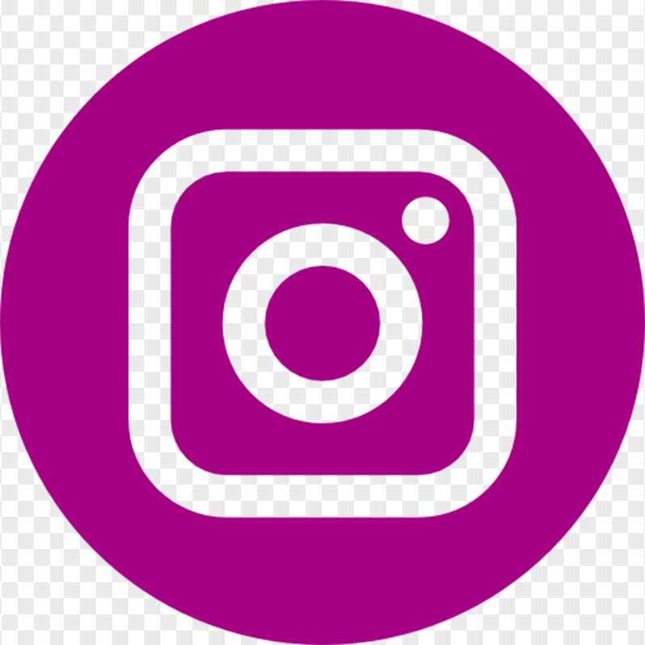
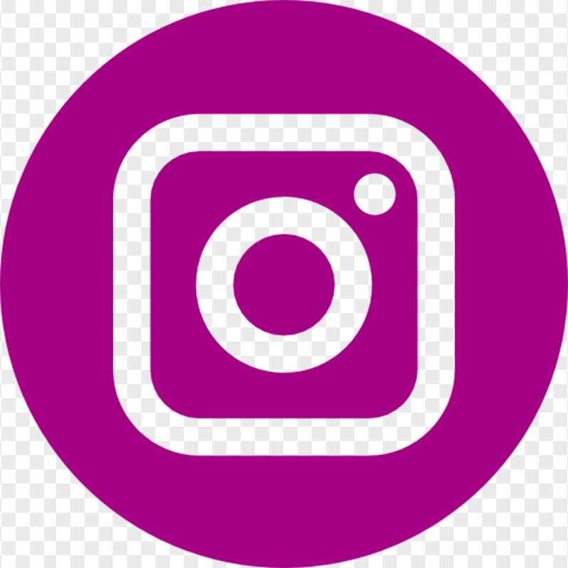
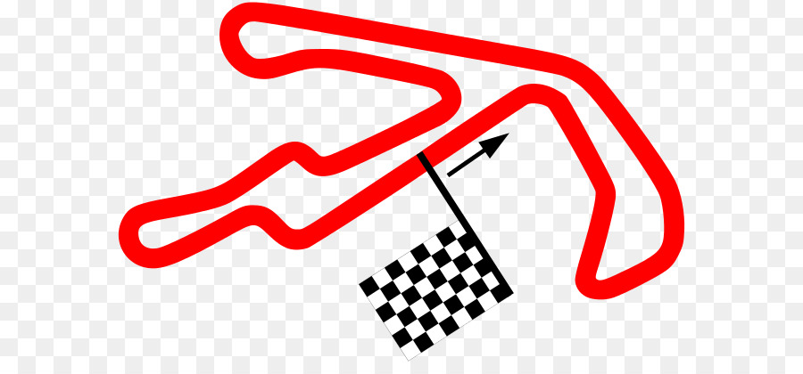
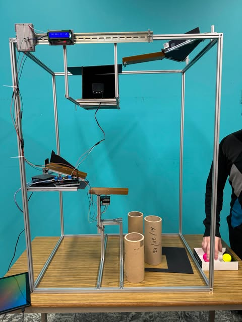
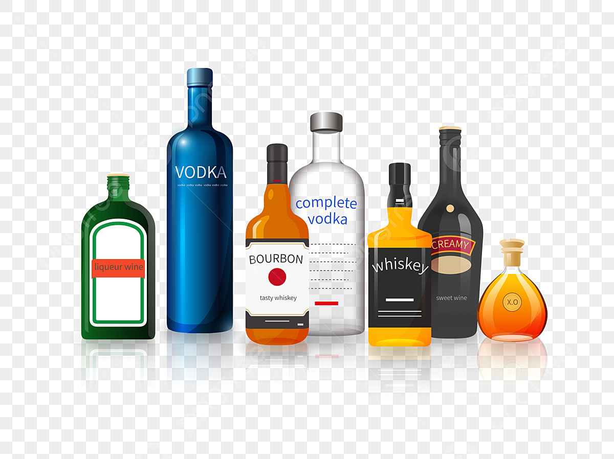
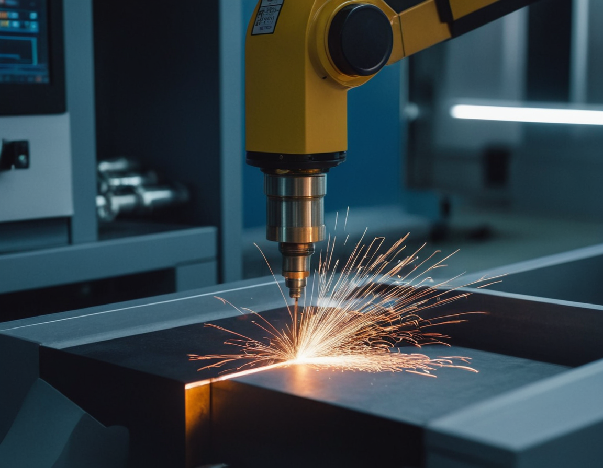

Adaptable
My early exposure to working environments has made me flexible and quick to learn.
Hello, I'm
Student in IT
 

.png)
Get to know more about me

My early exposure to working environments has made me flexible and quick to learn.
I take initiative and strive to exceed experience-sub-titleations in my responsabilities.
I thrive in team settings, valuing cooperation, collective problem-solving ,feedback
While I may take time to express my thoughts, I actively work on improving my confidence in public speaking and group settings.
My determination can sometimes make me overly focused on specific outcomes, but I am learning to balance this with flexibility and openness to alternative solutions.

Bachelor
Industrial IT
Done at
TechnoCampus
Explore my
Browse My Recent
First year project
During my first year of my bachelor degree, I've been asked to achieve a group project. After some brainstorming and time management we've decided to do a project centered around a car track. The goal was straightforward: every time the car crossed the finish line, a sensor would sent an update to a program which was running on our laptop. This signal had several purpose, such as save the lap time and increase the lap counter. To ensure smooth progress, we divided the tasks among team members based on our individual strengths and interests. I primarily handled the electronics because I felt more comfortable working with physical components at that time. This involved setting up and connecting sensors to ensure they functioned correctly with the car track. Meanwhile, other team members focused on the coding aspect, which involved writing a program to process the sensor signals. Since I didn’t feel confident in coding back then, I preferred to leave that task to someone more skilled. During this project I've learned to use eletronical parts such as the different sensors and also master how to code in C language. Through this project, I learned to work with various electronic components, such as different types of sensors. I also gained experience coding in C, which was new and challenging for me. Additionally, this project gave me my first experience working in a team, as I had never had to collaborate with others in this way before. The time management was also crucial certainly the more crucial aspect to handle especially in first year. Overall, this experience taught me technical skills and a great teamwork.
Second year project
This project was a duo collaboration where my partner and I worked on a golf ball sorting system. The project involved significant electronic components, such as sensors and a smart AI camera (HuskyLens), along with web-based interactions. The system tracked the number and color of golf balls that passed through and maintained a historical log for monitoring purposes. Additionally, we had to design and build a physical structure to house all the electronic components effectively. My contributions focused on web development, building the physical structure, and managing the team and time. I actively developed the website interface, which allowed users to interact with the system and access the logs. Designing the structure was another key responsibility, ensuring it was robust and functional for the electronic setup. While my coworker primarily handled the coding, I remained involved to understand the programming aspects better and enhance my knowledge in this area. Throughout this project, I significantly improved my time management and organizational skills. Balancing responsibilities within tight deadlines required strategic planning and prioritization. I also learned the importance of effective communication and delegation, ensuring that both of us leveraged our strengths to complete tasks efficiently. This experience not only strengthened my technical expertise, particularly in web development and structural design, but also provided personal growth. Working collaboratively taught me adaptability and how to maintain focus under pressure. Observing and contributing to the coding efforts expanded my understanding of programming, which will benefit me in future projects. Overall, this project was both challenging and rewarding. It enhanced my practical skills, boosted my confidence in teamwork, and emphasized the importance of combining technical abilities with effective collaboration to achieve shared goals.
Thrid year project
For this project, I was tasked with designing and developing a solution on my own. I decided to create a cocktail dispenser that can dispense the perfect amount of liquor for a balanced cocktail, either by pressing a button or by touching a tile on a mobile application. The first step in the process was to fully develop the mobile application, which was essential for controlling the dispenser. After completing the app, I started working on the physical structure of the project. Throughout this process, I learned how to integrate various components into my project, such as pressure sensors, ultrasonic sensors, and other essential electronics. One of the biggest challenges I faced was finding time to work on the project alongside my lessons at school. This forced me to improve my time management skills and prioritize my work more effectively. Additionally, I had the opportunity to enhance my technical abilities. I gained experience in reading technical datasheets, which helped me understand the specifications and capabilities of different components. I also learned how to code an ESP8266 and create a fully interactive mobile app. The outcomes of this project extended beyond just technical skills; it also taught me the importance of self-discipline and hard work. Overall, the project was a valuable learning experience that helped me grow both personally and professionally.
Industrial Project
During my third year of my bachelor’s program, I was tasked with a project within a "mini-usine" that involved collaboration with partners. The goal was to develop a website using the T3 app framework, which integrated a websocket to acquire real-time data from the working zone. Once the data was acquired, it was displayed on graphs and organized into various cards based on their respective categories. The project also required the creation of a database to store historical data of the working zone. In parallel, I worked on integrating a VR headset to display this data in an immersive environment. This aspect of the project was both challenging and rewarding, as I had to learn and adapt to the complexities of VR development. Through this project, I gained valuable experience in creating a fully responsive website, showcasing multiple pages with specific information. Additionally, working with VR technology allowed me to expand my knowledge in a new field, offering a deeper understanding of both web and immersive development. This experience not only improved my technical skills but also enhanced my problem-solving and collaboration abilities, as I worked closely with my team to overcome the challenges we faced.
Get in touch